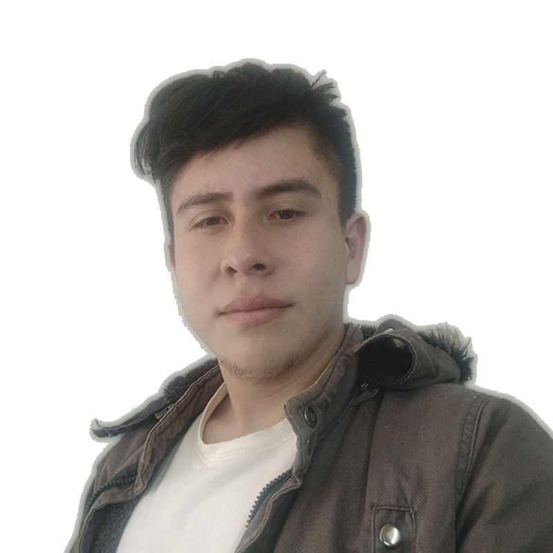

CONÓCENOS
Ruta MTB es un e-commerce especializado en bicicletas y accesorios MTB para ciclistas urbanos, deportistas y aventureros. Ofrecemos productos de alta calidad, seleccionados según las necesidades reales del ciclista, con descripciones claras y detalladas. Nuestra plataforma es fácil de usar, idealtanto para principiantes como para expertos. Brindamos asesoría, tips útiles y rutas recomendadas paramejorar la experiencia del usuario. Además, contamos con descuentos especiales en envíos por compras superiores a cierto valor. Más que una tienda, buscamos crear una comunidad MTB que acompañe y motive a cada ciclista.

Mision
Impulsamos la pasión por el ciclismo de montaña ofreciendo productos y accesorios de calidad para ciclistas que viven la MTB como aventura, deporte o estilo de vida. Brindamos una experiencia de compra confiable, ágil y especializada, conectando con quienes disfrutan explorar caminos y superar desafíos sobre dos ruedas.
Visión
Ser el e-commerce de referencia en MTB, acompañando a ciclistas de todos los niveles en cada ruta, reto y evolución. Soñamos con una comunidad MTB más conectada, equipada y motivada a disfrutar al máximo cada experiencia sobre su bici.
¡CONOCE A NUESTRO EQUIPO!
Diego Andrés Candamil

Apasionado por la programación, con sólidos conocimientos en matemáticas, física y lógica. Estudiante de Ingeniería de Sistemas enfocado en el desarrollo de soluciones eficientes.
Samuel Alexander López

Formación como desarrollador Back-end con enfoque en Java, POO y Spring Boot. Experiencia en el uso de bases de datos relacionales como PostgreSQL y MySQL. Conocimientos en tecnologías web como HTML5 y CSS, y manejo de control de versiones con Git y GitHub para el trabajo colaborativo
William David Paez
Apoyé al desarrollo UX/UI, colaborando en la creación de interfaces intuitivas y atractivas para mejorar la experiencia del usuario. Fomenté el trabajo en equipo, la comunicación efectiva y la resiliencia ante desafíos y cambios constantes en los proyectos.
Karen Marisol Ulcue
.png)
Desarrolladora en formación | Creatica digital | Fundadora de Encanto Eterno - Tienda de regalos personalizados. Apasionada por la tecnología, el diseño y el crecimiento personal. Desarrollando proyectos de e-commerce, IA y marca personal.
Lina María Vela

Ingeniera Química en formación como Junior Full Stack Java Developer, con interés en aplicar habilidades analíticas y técnicas en entornos digitales. Me destaco por mi proactividad, aprendizaje rápido y trabajo en equipo.